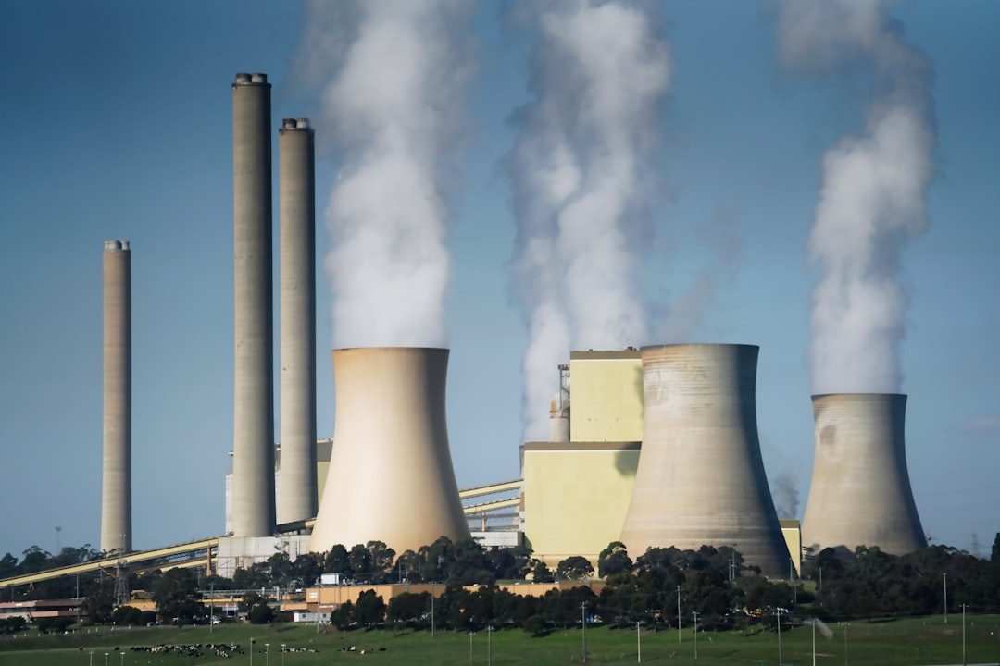

Energi Batu Bara
Energi bahan bakar fosil tradisional yang telah menggerakkan perkembangan industri selama berabad-abad

🏭
Cara Kerja
Pembangkit listrik batu bara membakar batu bara bubuk dalam boiler untuk menghasilkan uap bertekanan tinggi. Uap ini menggerakkan turbin yang terhubung ke generator, mengubah energi mekanik menjadi listrik. Uap kemudian didinginkan di menara pendingin dan dikondensasi kembali menjadi air untuk mengulangi siklus.
⚡
Produksi Energi
Pembangkit batu bara menyediakan daya baseload yang andal:
- • Pembangkit kecil: kapasitas 50-100 MW
- • Pembangkit menengah: 100-500 MW
- • Pembangkit besar: 500-3.000+ MW
- • Faktor kapasitas rata-rata: 40-60%
- • Laju panas: 8.500-10.500 BTU/kWh
- • Efisiensi: 33-40%
💰
Biaya
Batu bara secara historis murah:
- • Biaya modal: Rp 47 juta-63 juta per kW
- • Biaya bahan bakar: Rp 23.000-39.000 per MMBtu
- • LCOE: Rp 940.000-2,35 juta per MWh
- • Biaya operasi: Rp 315.000-550.000 per MWh
- • Masa pakai pembangkit: 30-50 tahun
- • Biaya dekomisioning: signifikan
Kekhawatiran Lingkungan
✗ Emisi CO2 tinggi (820g per kWh)
✗ Konsumsi air besar untuk pendinginan
✗ Emisi sulfur dioksida dan nitrogen oksida
✗ Pembuangan limbah abu batu bara
✗ Pelepasan partikulat dan merkuri
✗ Dampak lingkungan pertambangan
Keuntungan
✓ Daya baseload andal 24/7
✓ Kepadatan energi tinggi
✓ Infrastruktur yang mapan
✓ Daya dapat dikirim sesuai permintaan
✓ Cadangan batu bara melimpah secara global
✓ Teknologi yang dipahami dengan baik